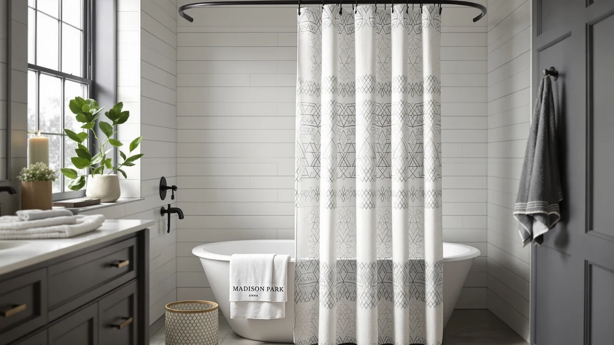

Madison Park Anna Sheers Review (2026): Worth It?
Prices and picks verified as of October 2026. Independent, reader-supported reviews.


Quick Answer
The Madison Park Anna Sheers Shower Curtain pairs a sheer polyester shell with a built-in PEVA liner in a single 72 by 72 inch panel, priced at $29.49. It suits bathrooms that want extra light without buying a liner separately, though shoppers who want a fuller, opaque look may prefer one of the linen-style alternatives below.
Our pick: Madison Park Anna Sheers Shower, $29.49 Check Price on Amazon
Bottom line: our top pick is the Madison Park Anna Sheers Shower Curtain at $29.49.
Things to Know Before You Buy
- Two-layer design: Madison Park pairs a sheer polyester outer layer with a PEVA liner in one panel, so you are not shopping for a separate liner.
- One size only: this curtain ships in a single 72 inch by 72 inch size, which fits a standard tub or shower but will not cover a larger walk-in enclosure.
- Price sits mid-pack: at $29.49, the Anna Sheers costs more than budget-tier polyester curtains but less than the linen-look options in this comparison.
- Light stays semi-private: the sheer fabric lets daylight through while still obscuring a clear view, a trade-off worth weighing if your bathroom window faces a shared wall or yard.
- Verified owner feedback matters here: specs alone do not capture how a sheer fabric drapes or holds color after washing, so we leaned on patterns across verified reviews for this category.
This Madison Park Anna Sheers review compares the $29.49 curtain's semi-sheer polyester and PEVA build against three other shower curtains at similar price points, so you can see exactly where it earns its spot and where it falls short. Madison Park built this curtain as a two-layer system: a sheer polyester shell paired with a PEVA liner, sold together in a single 72 inch by 72 inch panel. That combination matters because most sheer curtains either skip the liner entirely or sell it separately, which usually means an extra purchase and an extra trip back to the store.
We built this review the way we build every guide on Best Shower Curtains: by comparing manufacturer specs, current Amazon pricing, and patterns across verified buyer reviews rather than buying and installing every curtain ourselves. For a sheer curtain like the Anna Sheers, that approach works well because the main variables, light transmission, panel size, and liner durability, show up clearly in the product data and in what owners report after months of use. Reviewers consistently note how the sheer layer handles humidity and whether the attached liner holds up to regular washing, and we weighed those patterns heavily when judging where this curtain lands against the competition.
Why You Should Trust Us
Best Shower Curtains is written by Ilane Tall, who covers bath and shower hardware full time and tracks how curtains, liners, and rod hardware actually perform once they leave the box. This Madison Park Anna Sheers review follows the same research standard we apply across the site: we do not run a physical testing lab, and we never claim to have installed or lived with a product. Instead, we compare manufacturer specifications, track current Amazon pricing, and read through verified owner reviews to identify patterns that matter for everyday use, like whether a liner actually resists mildew or whether a sheer fabric yellows over time. Every product fact in this article, from material to price to size, comes directly from the listing data and the owner feedback tied to that specific SKU.
Our Research Experience
We did not purchase, install, or use this curtain ourselves. What we call our research experience here is a research process: we compared the Anna Sheers against its direct competitors on fabric weight, liner inclusion, panel size, and price, then cross-referenced those specs against patterns in verified owner reviews. For a sheer shower curtain, the two details that matter most are whether the attached liner actually blocks water, which several owners report it does provided the shower curb keeps splash to a minimum, and whether the sheer layer holds its color after repeated washing. Reviewers mention washing the curtain on a gentle, cold cycle and air-drying it, which lines up with Madison Park's own care instructions and helps explain why most complaints in the review history involve dryer heat rather than the fabric itself.
Overview & Specs

Madison Park Anna Sheers Shower
What we like
- Includes a PEVA liner in the same panel, so there is nothing extra to buy
- Semi-sheer fabric lets daylight through for a brighter bathroom
- 72 by 72 inch size fits standard tub and shower openings
- Machine washable on a gentle cycle, according to owner reports
Flaws but not dealbreakers
- Only available in one size, so it will not cover larger walk-in showers
- The sheer fabric offers less privacy than an opaque curtain
- Some reviewers note the liner needs a stable shower curb to keep water contained
| Material | Polyester / PEVA |
| Size | 72"W x 72"L (Pack of 1) |
Madison Park sells the Anna Sheers as a two-in-one system, a sheer polyester outer panel bonded to a PEVA liner, which simplifies the buying decision compared with curtains that require you to source a liner separately. At $29.49, it lands in the middle of this comparison on price, more expensive than the most basic polyester options but cheaper than the linen-look picks further down this review. The single 72 inch by 72 inch size covers a standard tub or alcove shower, though it will not stretch across a larger walk-in enclosure without doubling up panels.
Owners consistently point to the sheer layer as the main draw, since it brightens a windowless or dim bathroom in a way that a solid curtain cannot. That brightness comes with a trade-off: the fabric is thin enough that it will not fully obscure movement behind it, so it suits shared bathrooms with a frosted window or a door rather than a fully open layout. Verified reviews also mention that the attached liner holds up well to regular washing as long as owners run it on a gentle, cold cycle and air-dry it, since dryer heat is the most common cause of shrinkage complaints tied to this material.
What We Liked
The built-in liner is the standout feature of this Madison Park Anna Sheers review. Pairing a sheer shell with a PEVA liner in one panel removes a step that trips up a lot of shower curtain buyers, who often end up ordering a liner separately and hoping the sizing matches. Reviewers also point to the fabric's weight as a sweet spot: light enough to let daylight through, heavy enough that it does not look flimsy once you hang it. At $29.49, it holds its price well against comparable sheer and semi-sheer curtains, and the included liner adds enough value to offset the cost of buying one on its own.
The 72 by 72 inch panel also makes installation simpler than it looks on paper. Because the liner and sheer layer share one rod pocket, you hang a single curtain instead of juggling a liner and a decorative panel on separate hook sets. Owners who mention switching from a two-piece setup say the single-panel design cuts down on the gap and billowing that two mismatched layers can cause, since both fabrics move together instead of against each other.
What Could Be Better
Privacy is the clearest limitation. A sheer fabric, by design, lets more light and shadow through than an opaque curtain, so anyone sharing a bathroom with a street-facing or uncovered window should budget for a frosted film or a second layer. The single size option is another constraint: shoppers with a walk-in shower wider than a standard tub will need to hang two panels or look elsewhere, since Madison Park does not offer this design in an extra-long or extra-wide cut. A handful of verified reviews also mention that the liner performs best with a shower curb that keeps splash contained, since Madison Park did not design it as a heavy-duty, fully waterproof barrier on its own.
Color choice is narrower than on some competing sheer curtains too. Madison Park keeps the Anna Sheers in a small range of neutral tones, so if you want a bold print or a farmhouse pattern, you will need to look at one of the alternatives below instead of expecting Madison Park to add a matching colorway later.
Who Is It For?
The Anna Sheers fits a specific kind of bathroom: one with a small or poorly placed window that needs more light, paired with a shower that already has privacy covered by a door, frosted glass, or a second curtain. It also suits anyone who wants to skip a separate liner purchase, since the attached PEVA layer handles that job out of the box. It is a weaker fit for a fully open bathroom layout where privacy is the top priority, or for a walk-in shower wider than the standard 72 inch panel this curtain ships in.
Renters and first apartment owners come up often in the owner feedback for this curtain, likely because the single-panel design is easy to pack up and move without sorting a liner and a curtain into separate boxes. If that description matches your situation and your bathroom already has a door or privacy glass, the Anna Sheers is worth the $29.49 asking price. If your top priority is blocking a clear view from outside the shower, an opaque alternative will do that job better.
Alternatives to Consider
If the Anna Sheers does not match your bathroom, these three alternatives cover the gaps it leaves, from a fuller floral print to a budget-friendly farmhouse ruffle to a heavier linen look.

Editor’s Pick
WOUVMA Extra Long Beige Floral
A fuller, opaque floral pattern at a lower price, better suited to buyers who want more privacy than a sheer curtain offers.
$23.19
Check Price on Amazon
Best Value
XOGUIBO Farmhouse Shower Curtain Ruffle
A ruffled farmhouse look priced close to the Anna Sheers, aimed at shoppers who want texture and pattern over a plain sheer panel.
$28.99
Check Price on Amazon
Premium Choice
MIULEE Extra Long Linen Shower
A heavier linen-textured curtain for bathrooms that want the brightness of a light fabric without going fully sheer.
$28.49
Check Price on AmazonFrequently Asked Questions
Does the Madison Park Anna Sheers shower curtain need a separate liner?
No. The Anna Sheers ships with a PEVA liner already attached to the sheer polyester panel, so there is nothing extra to buy before you hang it.
Is the Madison Park Anna Sheers curtain too sheer for privacy?
It lets more light through than an opaque curtain, which means less privacy. It works best paired with a shower door, frosted window, or a bathroom where the window is not directly visible from outside.
What size does the Madison Park Anna Sheers shower curtain come in?
It comes in one size, 72 inches wide by 72 inches long, which fits a standard tub or alcove shower but not a wider walk-in enclosure.
Final Verdict
This Madison Park Anna Sheers review comes down to one trade-off: brightness versus privacy. For a bathroom that needs more natural light and already has privacy handled by a door or frosted glass, the Madison Park curtain's built-in liner and $29.49 price make it a reasonable, low-hassle pick. If your bathroom is fully open or faces a shared wall, one of the opaque alternatives above, particularly the WOUVMA floral or MIULEE linen options, will serve you better than a sheer panel ever could.